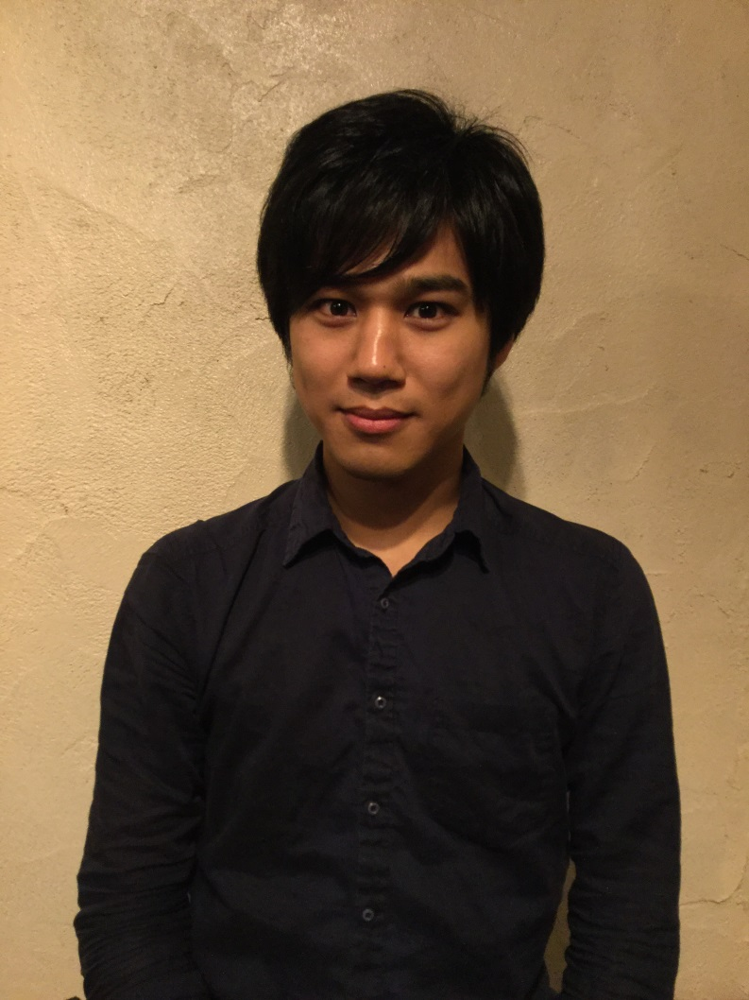
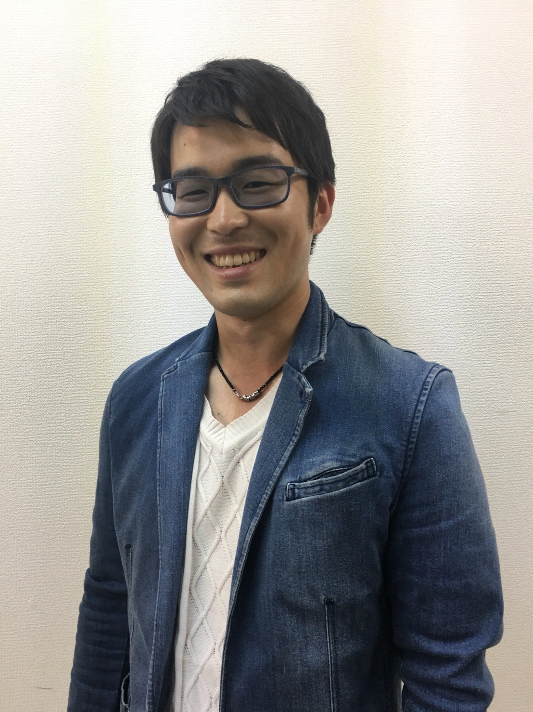
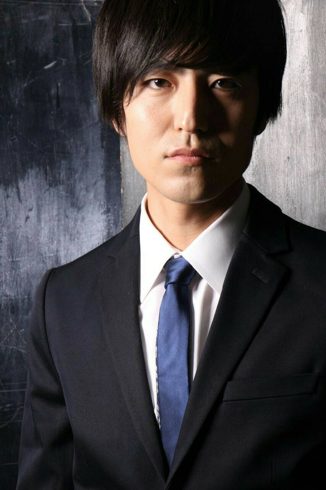
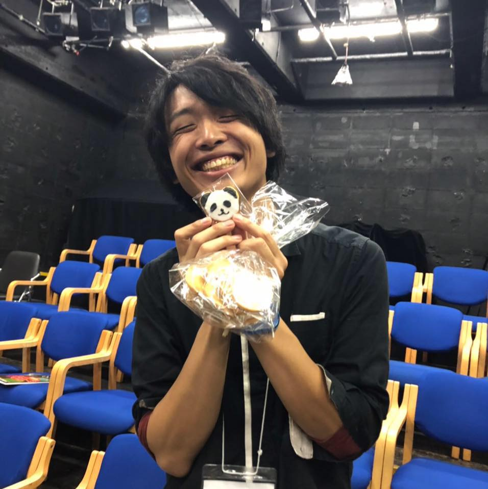

Member
Members

藤井のりひこ
- 1992年2月4日生。茨城県出身。
- 専門学校声優学科を卒業後、フリーで舞台出演・当日運営スタッフ等として活動。
- 何もないよりはいいからと自身の演劇ユニットGEKIGAprojectを
- 何の活動もしないのに名乗り始め、現在に至る。
Twitter：@pgfn99

鶴谷皇輔
劇団After+Five～リトル獣ウェイ～ 座長
自由映像集団「タマゴヤキ」にて作品製作中！

辰己晴彦
1985年 滋賀県生まれ
空想嬉劇団イナヅマコネコ 劇団員
- タッツミーのイッツミー！を合言葉に活動を続けるご存知イケメン俳優。
- 料理人として就職するも俳優への夢を諦めきれず、一念発起して2011年に上京。
- 類まれなセンスと、ラブラドールレトリバーと間違えるほどの人懐っこさを武器に
- 殺陣も芝居もマルチにこなすフリー俳優として活躍したり、たまにしなかったり。
- 好物はココア。
Twitter：@TattsuuuNNNNN

朝比奈史樹
1992年 静岡生まれ
演劇集団nohup主宰
- 武蔵大学演劇研究部OB。学生自体は他団体の演出助手などを経験
- 会社員としてはたらく傍で、2016年に演劇集団nohupを旗揚げ
- 笑って刺さる芝居をモットーに不定期に公演を行う
Twitter：@chickAM7